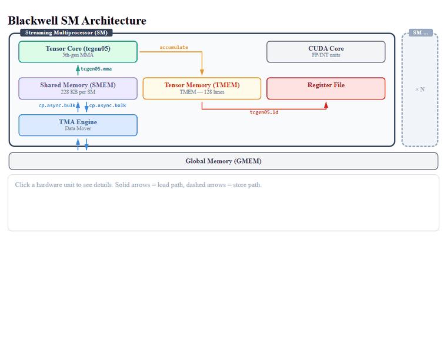
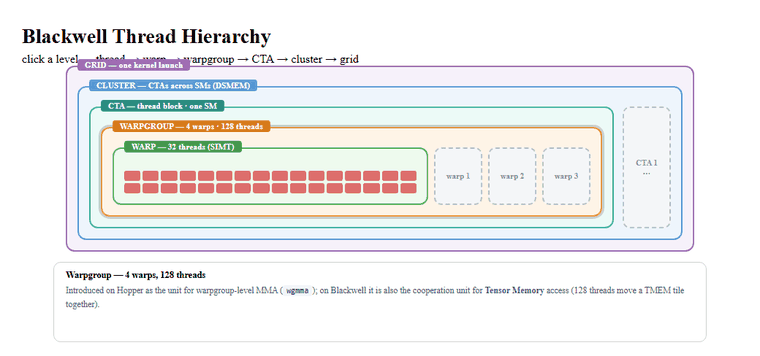
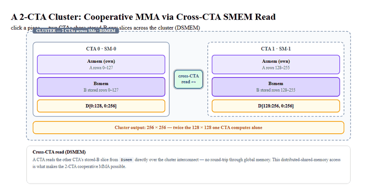
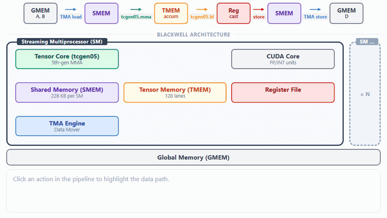

要写高性能GPU kernel，先得回答三个问题：线程怎么组织、数据放在哪里、不同硬件引擎如何协同。这一章按这条线索把Blackwell的基本结构讲清楚，最后用一个GEMM数据流水线把它们串起来。
核心结论藏在重叠里：Load、Compute、Epilogue三段不必严格串行，barrier与phase模型让Tensor Core、TMA和epilogue同时保持忙碌，这也是后续所有GEMM优化的出发点。
要写高性能GPU kernel，首先要弄清三件事：线程如何组织、数据存在哪里、不同硬件引擎如何协同。本章按这条线索展开，先讲GPU线程层级，再讲用于存放和搬运数据的内存空间，最后介绍负责计算与数据搬运的引擎；结尾的GEMM流水线把这些内容串起来，展示计算如何与数据搬运重叠。
- 线程层级决定协作尺度：thread、warp、warpgroup、CTA、cluster和grid各对应一种组织粒度。Blackwell上很多操作有自己天然的scope：一次TMA拷贝由单个线程发起，一个完整的TMEM累加器由4个warp在各自的32 lane窗口上读回，而2-CTA协作MMA横跨两个CTA。
- 数据不只存在一个地方：GMEM、SMEM、TMEM与寄存器在容量、延迟、访问范围上各有取舍，集群还通过DSMEM让一个CTA访问另一个CTA的共享内存。高性能kernel的核心任务之一，就是让数据在这些空间之间高效流动。
- 计算与数据搬运由不同硬件引擎承担：CUDA core负责地址计算、控制流与标量逻辑，Tensor Core承担主要的矩阵计算，TMA负责异步搬运数据。
我们从Blackwell的SM架构看起，下图给出了本章用到的主要硬件单元。

图1覆盖了Blackwell SM内部参与这些工作的单元：warp、warpgroup、共享内存、Tensor Memory、Tensor Core与TMA引擎。
GPU不会把成千上万个线程当成一个平面集合来管理，而是把它们组织成若干层级，每一层的协作粒度都不同。下图按thread、warp、warpgroup、CTA、cluster、grid的顺序逐级展示Blackwell上的线程层级。

- Thread：标量执行单元。每个线程有自己的程序计数器和寄存器，并由它所在warp内的lane ID标识。
- Warp：32个线程，以SIMT（单指令多线程）方式执行。同一warp的lane一起发射同一条指令，但每个lane保留自己的寄存器，也可以被单独屏蔽，这正是同一warp内的lane能走不同分支的原因。
- Warpgroup：连续4个warp，也就是128个线程。Hopper把warpgroup引入为发射warpgroup级MMA（wgmma）的单位；在Blackwell上，这4个warp还可以覆盖Tensor Memory的4个32 lane窗口。
- CTA（Cooperative Thread Array，CUDA里也称为thread block）：硬件调度的基本单位。一个CTA运行在单个SM上，并拥有该SM内一块私有的共享内存分配。多个CTA可以同时驻留在同一个SM上，此时它们会分摊这个SM的共享内存容量。
- Cluster：一组可以跨不同SM协作的CTA。cluster内的CTA之间可以互相同步，也可以读写彼此的共享内存，这项能力称为分布式共享内存。
Blackwell的关键操作并不是都由同一组线程发起。一次TMA拷贝由单个线程发起，之后由硬件执行；每个warp为自己那32条lane的窗口发起warp级TMEM加载；一条tcgen05 MMA由某个指定线程提交，而2-CTA协作MMA横跨两个CTA。
我们把参与某个操作的线程集合称为它的scope。分析一个kernel时，需要把操作的scope与它的数据布局、分发机制放在一起考虑。
线程层级回答了计算如何组织，接下来要确定数据存在哪里。GPU提供多种内存空间，它们在容量、延迟与访问范围上各有取舍，kernel必须让数据在这些空间之间高效流动。
Tensor Memory（TMEM）是Blackwell引入的片上存储空间。在更早的架构上，MMA累加器通常放在寄存器里；随着MMA tile变大，这些累加器会占用寄存器文件的很大一部分。Blackwell的tcgen05改为把累加器写入TMEM，从而减轻寄存器压力。
TMEM可以看成CTA使用的一块二维暂存区：它有128行，对应128条TMEM lane，最多512列，每列32位宽。逻辑上这块空间属于CTA，物理上它仍然位于SM上。
TMEM由程序显式管理。kernel必须自己分配和释放它，epilogue也必须显式地把MMA累加器从TMEM读回寄存器。要读回一个完整的128 lane累加器，warpgroup里的4个warp各自加载属于自己的那条32 lane TMEM窗口。
| 内存空间 | 归属 | 作用 | 说明 |
|---|---|---|---|
| 全局内存（GMEM） | 整个设备 | 持久化张量存储 | 大容量HBM，所有SM共享 |
| 共享内存（SMEM） | 每个CTA（单个SM） | tile暂存 | 低延迟暂存区；B200上每个SM最多228 KB |
| Tensor Memory（TMEM） | 每个CTA | MMA累加器存储 | Blackwell引入，供tcgen05使用 |
| 寄存器文件（RF） | 每个线程 | 标量与每线程tile片段 | 访问速度快，存放epilogue与临时值 |
一个cluster里可以包含运行在不同SM上的CTA。每个CTA仍然拥有自己的共享内存，但分布式共享内存（DSMEM）允许同一cluster内的其他CTA访问这些数据。
这项能力省掉了绕道GMEM的往返：一个CTA可以直接访问另一个CTA的SMEM，而不需要数据所有者先写回GMEM、再由对端重新读入。当异步操作搬运这类数据时，它会在传输完成后更新一个完成barrier；使用方需要先等待该barrier，再去消费结果。
下图展示了2-CTA集群里的DSMEM访问路径：每个CTA保留自己的SMEM，同时可以读取另一个CTA的SMEM。

在上面的2-CTA GEMM中，每个CTA存放自己那部分A、B分片，并通过DSMEM读取对端CTA的B分片。这里的共享并不会把两块SMEM合并，它只意味着同一cluster内的CTA可以跨SM访问彼此的数据。
两个CTA可以组成一个CTA pair，以cta_group::2模式执行协作MMA，从而产出更大的输出tile。
线程层级决定了计算如何组织，内存空间决定了数据存在哪里，而真正的算术由SM内部的计算单元完成。一个SM主要有两类计算单元：CUDA core与Tensor Core。
- CUDA core是通用的SIMT ALU，执行处理索引运算、逐元素数学、归约和控制流的标量与向量指令。
- Tensor Core是固定功能单元，以tile为粒度执行稠密矩阵乘加，在一条指令里完成D = AB + C。
Tensor Core的算术吞吐远高于CUDA core，在FLOP/s上常常高出一个数量级以上。GEMM、卷积、注意力这类稠密线性代数负载，只有有效利用Tensor Core才可能接近峰值性能。与此同时，高性能kernel还必须及时把数据准备好，否则Tensor Core会因为等待数据或依赖而空转。
不同代GPU的变化不只在Tensor Core吞吐上，编程接口与累加器的存放位置也在变。Hopper引入了异步的warpgroup MMA（wgmma.mma_async）；Blackwell的第五代Tensor Core tcgen05把累加器放在Tensor Memory而不是寄存器里。后续章节会详细讨论这些差异。
Cluster还带来两种对GEMM很重要的协作方式。2-CTA协作MMA让两个CTA各提供一部分SMEM操作数，拼成更大的Tensor Core MMA tile；TMA multicast让一次GMEM加载把同一个tile送给多个CTA，避免每个CTA各自重复读取同一份数据。两者都依赖前面介绍的cluster与DSMEM机制。
前面几节分别介绍了线程层级、内存空间、数据搬运机制和计算单元。现在我们用一个GEMM流水线把它们连起来，看看这些硬件结构如何协同工作。下图给出了三段式GEMM tile流水线涉及到的主要单元。

一个GEMM tile通常要走过三个阶段。
- Load：一次TMA拷贝把A或B的操作数tile从GMEM搬到SMEM。由单个线程发起这次拷贝，并记录预期到达的字节数。数据陆续抵达SMEM的过程中，TMA引擎会更新进度计数；只有当所有预期字节都到达后，完成barrier才会变为complete。
- Compute：一条tcgen05 MMA从SMEM读取操作数tile，把乘积累加进TMEM tile。由某个指定线程提交这条MMA；计算完成时，硬件会通知对应的barrier。
- Epilogue：一个warpgroup把TMEM累加器读回寄存器，把结果转换成输出dtype，再写回GMEM。这一步通常经由SMEM中转，最终写回可能使用TMA store。
这三个阶段之间存在数据依赖，但不必严格串行。朴素的kernel会按加载、等待、计算、等待、写回的顺序依次执行，硬件单元轮流空转。
高性能kernel会把各阶段组织成流水线：Tensor Core计算第k个tile时，TMA引擎可以搬运第k+1个tile，epilogue可以处理第k-1个tile的输出。barrier与phase模型负责协调这些异步阶段之间的安全交接，本书后续的GEMM优化都建立在这套机制之上。
参考：https://mlc.ai/modern-gpu-programming-for-mlsys/chapter_background/index.html